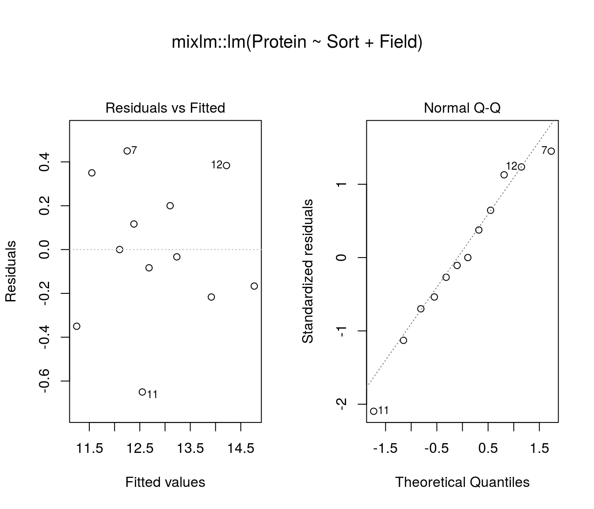

Week Two
Exercise 1
Air pollution measured by chlorine content (measured in ppm, parts per million) for three cities, randomly selected during one year.
One year ago the cities were approximately equal polluted, but City 1 has the last year tried to reduce the pollution. Data is in a word file called Monday week 2 on fronter.
Stack the data. Use the ANOVA model to investigate if the chlorine content really differs. Check the model assumptions, which problems do you see?
One of the way you can import data from word file into R is using clipboard. Just copy the data and import the data in clipboard into R (Rcommander: Data > Import Data > from text file …)
Let \(y_{ij}\) be the chlorine content (polution measurement) for city \(i\). The ANOVA model to investigate if the chlorine content really differs is,
\[\begin{equation} y_{ij} = \mu + \tau_i + \epsilon_{ij}, \text{ where, } \epsilon_{ij} \sim \text{NID}\left(0, \sigma^2\right) \tag{1} \end{equation}\]Since, city is randomly selected, we also have assumption that the treatment effect follows normal distribution with mean 0 and variance \(\sigma_\tau^2\), i.e. \(\tau_i\sim\text{NID}\left(0, \sigma_\tau^2\right)\)
The ANOVA table for the Model ((1)) is,
Df Sum Sq Mean Sq F value Pr(>F) City 2 74.581 37.291 3.016 0.061 Residuals 39 482.230 12.365 The p-value in ANVOA table is larger than 0.05, so can not reject following Hypothesis at 95% confidence level and stay on the fact that the polution level of different cities are same. However, at 90% confidence level the cities appears to be significantly different.
\[ \begin{aligned} H_0 &: \sigma_\tau ^ 2 = 0 \\ H_1 &: \sigma_\tau ^ 2 > 0 \end{aligned} \]
Following diagnostic plot (Rcommander: Model>Graph>Basic Diagnostic Plot) gives a picture of assumption wheather they hold true in this situation.
Try to interpreate the plot youself
Take the logarithm of the response. (Data > Manage variables in active dataset > compute new variables). Note that natural logarithm is done by
log(variable). Repeat the analysis, but onlog(chlorine). Check model assumptions once again. Investigate if city 1 has been able to reduce the pollution significantly compared the two others cities by a suitable contrast.Df Sum Sq Mean Sq F value Pr(>F) City 2 10.5435 5.2718 6.1158 0.0049 Residuals 39 33.6177 0.8620 The diagnostic plot can be obtained as in previous question,
Interpreate the plot youself and find its differences from the previous diagnostic plot
To investigate if
city 1has been able to reduce the pollution significantly compared the two others cities, a contrast with cofficientc(1, -0.5, -0.5). Since,\[\text{Contrast } (\Gamma) = \mu_1 - \frac{1}{2}\left(\mu_2 + \mu_3\right) = \tau_1 - \frac{1}{2}\left(\tau_2 + \tau_3\right)\]
The hypothesis for this test is,
\[ \begin{aligned} H_0 &: \Gamma = 0\\ H_1 &: \Gamma < 0 \end{aligned} \]
In R-commander, we can test this hypothesis from Models > Test Contrasts in ANOVA. The result for the test is,
Estimate Std. Error t value Pr(>|t|) City c=( 1 -0.5 -0.5 ) -1.057827 0.3039017 -3.480822 0.0012468 Since this is one sided hypothesis, the p-value for this test will be half the p-value we obtain in above table (See More). i.e.
\[\frac{0.0012}{2} = 0.0006\]
Since the p-value is very small, we reject the null hypothesis and claim that
City1has significantly low chlorine level as compared to the other two cities.
Exercise 2
The following data are from an exploration of what kind of brand people in general prefer. Data could be found in the word file called Monday week 2 on fronter. 6 recipes were tried out, each with 8 replicates. 48 respondents were randomly picked out and given one piece of bread (without information on recipe). They were asked to give points on a scale from 0 to 10 (10 is best).
| R1 | R2 | R3 | R4 | R5 | R6 |
|---|---|---|---|---|---|
| 4 | 7 | 6 | 4 | 3 | 7 |
| 4 | 6 | 6 | 3 | 5 | 8 |
| 6 | 5 | 8 | 5 | 5 | 6 |
| 5 | 3 | 10 | 4 | 6 | 4 |
| 10 | 5 | 7 | 6 | 6 | 10 |
| 8 | 6 | 10 | 7 | 9 | 6 |
| 9 | 9 | 8 | 3 | 2 | 4 |
| 7 | 4 | 8 | 3 | 2 | 6 |
R1, R2 and R3 are bread baked on coarse-grained flour (Norwegian grovmel), the others on fine.
R1, R3 and R5 is Swedish recipes, the others are Norwegian.
State a model for this investigation.
Let \(y_{ij}\) be the point for \(i^\text{th}\) recipe and \(j^\text{th}\) replication. The model is,
\[\begin{equation} y_{ij} = \mu + \tau_i + \epsilon_{ij}, \text{ where, } \epsilon_{ij} \sim \text{NID}\left(0, \sigma^2\right) \label{eq:W2E2Model} \end{equation}\]In the model ((??)), we have parameters,
\(\mu\) : Overall average point obtained by all recipes
\(\tau_i\) : Effect of recipe \(i^\text{th}\) (point obtained by recipe \(i\) more(less) than the overall average)
Here, we also assume that the overall effect of all recipes equals to zero.,
\[\sum_{i = 1}^5\tau_i = 0\]
Test if there is an effect of recipes.
To fit the model from the given data, first we need to stack it. The hypothesis for testing if there is an effect of recipes is,
\[ \begin{aligned} H_0 &: \tau_i = 0 \text{ for all }i \\ H_1 &: \tau_i \ne 0 \text{ for any }i \end{aligned} \]
The ANOVA table for model ((??)) in the previous answer is,
Df Sum Sq Mean Sq F value Pr(>F) Recipe 5 66.938 13.388 3.517 0.01 Residuals 42 159.875 3.807 From the ANOVA table, the low p-value (\(0.01\)) shows that
Recipeshave significantly different preferences.
Answer the following questions by suitable contrasts.
Is there positive effect of coarse-grained flour?
Here, R1, R2 and R3 are bread baked on coarse-grained flour, so the contrast can be written with coefficients
c(1/3, 1/3, 1/3, -1/3, -1/3, -1/3)as,\[ \begin{aligned} \Gamma &= \frac{1}{3}\left(\tau_1 + \tau_2 + \tau_3\right) - \frac{1}{3}\left(\tau_1 + \tau_2 + \tau_3\right) \end{aligned} \]
The hypothesis to test if this contrast is positive is,
\[ \begin{aligned} H_0 &: \Gamma = 0 \\ H_1 &: \Gamma > 0 \end{aligned} \]
From the test output below, we reject \(H_0\) (very small p-value, compare with half of p-value) and conclude that there is positive effect of coarse-grained flour.
Estimate Std. Error t value Pr(>|t|) Recipe c=(1/3 1/3 1/3 -1/3 -1/3 -1/3) 1.5417 0.5632 2.7373 0.009 Is there positive effect of coarse-grained flour, if we decide to use Norwegian recipes?
Here only Norwegian recipes (R2, R4, R6) are considered among which only R2 is made from coarse-grained flour. Since we are testing R2 against average of R4 and R6, the coefficient for contrast in this situation is
c(0, 1, 0, -0.5, 0, -0.5). So,\[\text{Contrast: }\Gamma = \tau_2 - \frac{1}{2}\left(\tau_4 + \tau_6\right)\]
The hypothesis for this test is,
\[ \begin{aligned} H_0 &: \Gamma = 0 \\ H_1 &: \Gamma > 0 \end{aligned} \]
From the test output below, we can not reject \(H_0\) (high p-value) and conclude that there is not a positve effect of coarse-grained flour in Norwegian recipes. Here we compare p-value with half of its value since this is one-tailed test. Even in this situation, p-value is high enough not to reject \(H_0\).
Estimate Std. Error t value Pr(>|t|) Recipe c=( 0 1 0 -0.5 0 -0.5 ) 0.25 0.8448 0.2959 0.7687 Is there different effect of Norwegian and Swedish recipes if we decide to use coarse-grained flour?
Among the course grained flour, R1 and R3 are Swedish recipes while R2 is Norwegian. Here,
Contrast Coefficients:
c(-0.5, 1, -0.5, 0, 0, 0)Contrast:
\[\text{Contrast: }\Gamma = \tau_2 - \frac{1}{2}\left(\tau_1 + \tau_3\right)\]
Hypothesis:
\[ \begin{aligned} H_0 &: \Gamma = 0 \\ H_1 &: \Gamma \ne 0 \end{aligned} \]
Test Result:
Estimate Std. Error t value Pr(>|t|) Recipe c=( -0.5 1 -0.5 0 0 0 ) -1.625 0.8448 -1.9235 0.0612 Decision:
Could not reject \(H_0\) at 5% level of significance so there is no eveidence of Norwegian and Swedish recipes being different. However, at 10% percent, we conclude that there is significance difference between Norwegian and Swedish recipes.
Exercise 3
- See Exercise 11 Week 1. Load the sire data once more.
Explain what we mean by a residual.
The part of response that your model could not expalin are residuals. Residuals are also termed as error terms or noise. You can obtain residuals as,
\[\text{Error: }(\epsilon_{ij}) = y_{ij} - \hat{y}_{ij}\]
For example in a one-way ANOVA model \(y_{ij} = \mu + \tau_i + \epsilon_{ij},\; \epsilon \sim \text{NID}(0, \sigma^2)\), the estimated error terms are,
\[\text{Error: }(\epsilon_{ij}) = y_{ij} - \hat{y}_{ij} = y_{ij} - (\hat{\mu} + \hat{\tau_i})\]
Calculate the residuals for all observations.
In R-commander: Model > Add Observation to … and choose Residuals.
What does it mean if a residual is positive or negative?
Since \(\epsilon_{ij} = y_{ij} - \hat{y}_{ij}\), when the true values are larger than the fitted values, residuals are positive. Similary, when the true values are smaller than the fitted values, residuals are negative. Large residual, either it is positive or negative indicates that the observation corresponding that residual is far away from the fitted model.
Find the standardized residual. Do any residual have large absolute value?
In R-commander: Model > Add Observation to … and choose standardized residuals. Following observation has largest absolute residual and standardized residuals.
milk sire residual std.residual 7562 1 872.75 2.794619 Find the animal with the largest and the smallest residual.
Sire 1 has both largest and smallest residuals. This also shows that there is large variation in the milk production from
sire1.milk sire residual std.residual 6038 1 -651.25 -2.085358 7562 1 872.75 2.794619 Plot the residuals against the fitted values, make comments
The plot shows that the residual terms have constant variance expcept for some larger fitted values. Observations 30, 39 and 40 have largest absolute residuals. These observations have distorted the assumption of constant variation of residual and could lead to poor predictions.
- Assume now that sire is a random effect (discussed on lecture Tuesday).
If we are interested in the sire effect in general, explain why it is natural to assume sire as a random factor.
Write down the model. Interpretate the 3 parameter in the model.
The model with sire as random effect is,
\[\begin{equation} y_{ij} = \mu + \tau_i + \epsilon_{ij}, \text{ where, } \epsilon_{ij} \sim \text{NID}(0, \sigma^2) \text{ and } \tau_i \sim \text{NID}(0, \sigma_\tau^2) \label{eq:W2E03bModel} \end{equation}\]The three unknown parameters are,
\(\mu\) : Overall average annual milk production from all sires
\(\sigma_\tau^2\) : Variability in annual milk production between different sires
\(\sigma^2\) : Variability in annual milk production within same sires
Is there effect of sire? State the null hypothesis and the alternative. Estimate the variance components, and give an interpretation of these estimates. Estimate the correlation between cows with same father.
Hypothesis for testing effect of sire is,
\[ \begin{aligned} H_0 &: \sigma_\tau^2 = 0 \\ H_1 &: \sigma_\tau^2 > 0 \end{aligned} \]
The ANOVA table for model ((??)) is,
Mean Sq Sum Sq Df F value Pr(>F) sire 312752.3 1251009 4 2.806 0.04 Residuals 111461.9 3901166 35 Here, we have Mean Sum of Squares,
\[ \begin{aligned} \text{MS}_\text{treatment} &= 312752.34 \\ \text{MS}_\text{Error} &= 111461.88 \end{aligned} \]
The variance components \(\sigma^2\) and \(\sigma_\tau^2\) referes to the variation within a factor and variation between factors respectively. The total variation present in \(y_{ij}\) is the sum of these two variances. The estimates of these variance components can be obtained as,
\[ \begin{aligned} \hat{\sigma}^2 &= 111462 \\ \hat{\sigma}_\tau^2 &= \frac{\text{MS}_\text{treatment} - \text{MS}_\text{E}}{n} \\ &= \frac{201290.46}{8} = 25161.31 \end{aligned} \]
How would you estimate the variance and the standard deviation for annual milk production in the whole population?
Since the total variation present in \(y_{ij}\) is the sum of two variance components we have,
\[ \begin{aligned} \text{Total Variation} &= \sigma_\tau^2 + \sigma^2 \\ & = 25161.31+111461.88 = 136623.19 \end{aligned} \]
Thus, the standard deviation for annual milk production in whole population is estimated as \(\sqrt{136623.186} = 369.626\)
How would you estimate the expected annual milk production in the whole population? What is the standard error of this estimate? Construct a 95% CI for these expectation?
Exam Questions for exercise
- Exam STAT 210 Sep 2012, Exercise 1. Problems and solutions available on fronter.
- Exam STAT 210 Sep 2013, Exercise 3. Problems and solutions available on fronter (Tuesday).
Exercise 4
Assume the following result from a completely randomized block design (called experiment1) Where
| Block | |||
|---|---|---|---|
| Treatment | 1 | 2 | |
| 1 | 1 | 2 | |
| 2 | 3 | 5 |
- State the model.
Use pocket calculator (if necessary).
- State the model for the block experiment.
- Find SSTotal, SSTReatment, SSBlock and SSError.
- Estimate all the parameters in the model.
- Find the standard error of the estimates.
- Find the residuals.
- Find the fitted values.
- Split the fitted values into a general part, a part by treatment and a part by block.
- Make an ANOVA table and, test if there is treatment effect.
You can check your results with R-commander
If you instead obtained the following result (Experiment 2)
| Block | |||
|---|---|---|---|
| Treatment | 1 | 2 | |
| 1 | 1 | 2 | |
| 2 | 4 | 6 |
Answer the following without any calculations.
Experiment 2 gave:
- larger SSTR than Experiment 1?
- larger SSB than Experiment 1?
- larger SSE than Experiment 1?
- larger SST than Experiment 1?
- larger F or a larger p-value when testing for treatment effect than Experiment 1.
Analyze experiment 1 (incorrectly) by a one factor model.
- Why is SSE larger compared to the block design?
- Is the unexplained variance (\(\sigma^2\)) larger or small compared to the block design?
From textbook
Exercise 4.2
The ANOVA from a randomized complete block experiment output is shown below.
| Source | DF | SS | MS | F | P |
|---|---|---|---|---|---|
| Treatment | 4 | 1020.56 | ? | 30.14 | ? |
| Block | ? | ? | 64.765 | ? | ? |
| Error | 20 | 169.33 | ? | ||
| Total | 29 | 1513.71 |
Fill in the blanks. You may give bounds on the P-value.
Source DF SS MS F P Treatment 4 1020.56 255.1400 30.14000 < 0.0001 Block 5 323.82 64.7650 7.64956 0.00037 Error 20 169.33 8.4665 Total 29 1513.71 We can find p-value using computer or some advanced calculator but try to find a range of p-value from the F-table.
How many blocks were used in this experiment?
One block factor with 5 levels is used in this experiment.
What conclusions can you draw?
Problems and solutions for previous exams are found on fronter.
- Exam Stat 210 Sep 5, 2011.
- Exam Stat 210 Sep, 2012 Exercise 2.
- Exam Stat 210 Sep, 2013 Exercises 1 and 2.
- Exam Stat 210 Sep, 2014 Exercise 2.
Comment: Datasets (named Exam*.RData) are available for the exam problems for those who would like to reproduce output and check answers using R.
Exercise 5
will be discussed on lecture Thursday, but try yourself
Load the R data blockwheat. This is a block experiment where the response is protein in wheat. We have 3 sorts (Bastian, Berserk and Bjarne), each sort is tried once on 4 different fields (lock).
Why is this regarded as a block experiment?
Here, our primary interest is sorts irrespective of where it is tried (or grown). However,
fieldfactor can affect (increase noise) the analysis if it is not included in the model which consequently prevent us from discovering the effect of sort. Thus, a block experiment wherefieldfactor is also included in the model not as a primary subject of interest but rather to block unnecessary noises that it can create if it is not included in the model. Block experiment reduces noise so that we can investigate the factor effect that is of our interest.How many observations are there in total?
There are 4 fields and 3 sorts where a protein value is measured for each of the combination. The total number of observation is 12.
Do we have replicates?
Only one measurement is made for each combination of field and sort, so there are not any replications. But if we remove field factor and consider one-way ANOVA model, we will have 4 replication of sort.
State the model.
The block experiment model we have is,
\[\begin{equation} y_{ij} + \mu + \tau_i + \beta_j + \epsilon_{ij} \label{eq:W2E05Model} \end{equation}\]Here the model follows the assumptions,
\[ \begin{aligned} \epsilon_{ij} &\sim \text{NID}\left(0, \sigma^2\right) \\ \sum_{i = 1}^3{\tau_i} &= 0 \\ \sum_{j = 1}^4{\beta_j} &= 0 \end{aligned} \]
Make an ANOVA table.
ANOVA table for model ((??)) is,
Df Sum Sq Mean Sq F value Pr(>F) Sort 2 1.487 0.743 3.867 0.083 Field 3 10.907 3.636 18.913 0.002 Residuals 6 1.153 0.192 Does it seem smart to include field in the experiment (give reason for your answer?
It is a better idea to include
fieldin this experiment. Sincefieldfactor has significant effect and if it is removed, the variation present in protein measurement that it describes will appear as a noise. Consequently, the probability of finding the effect of Sort which could be significant will decreases.Estimate the parameters in the model.
The coefficient estimates are,
(Intercept) \(\hat{\mu}\) Sort(Bastian) \(\hat{\tau}_1\) Sort(Berserk) \(\hat{\tau}_2\) Field(F1) \(\hat{\beta}_1\) Field(F2) \(\hat{\beta}_2\) Field(F3) \(\hat{\beta}_3\) 12.833 0.467 -0.383 -0.067 -1.2 -0.2 From the sum-to-zero assumptions, we can get \(\hat{\tau}_3 = -(\hat{\tau}_1 + \tau_2) = -0.083\) and \(\beta_4 = -(\beta_1 + \beta_2 + \beta_3) = 1.467\)
Similarly, the estimate for error variance is given by \(\text{MS}_E\) which is 0.192
- Can you prove sort effect?
- Find the fitted values and the residuals for all observations.
Check the model assumptions.
We can check model assumption from basic diagnostic plots for the fitted model.

Plot shows that the residual terms are scattered randomly and constant over different fitted values. This means the assumption of constant residual variance holds true. Further, in the normal q-q plot, points are aligned with the q-q line which fairly suggest that error terms are normally distributed.
Explain the residual to a person without knowledge in statistics.
Use the model to show that the expected differences between two sorts are independent on the block. (In block experiments it is unusual to include interaction.)
Does the plot below (Graphs > Plot of means) support the statement above?
The model for a block experiment is,
\[y_{ij} = \mu + \tau_i + \beta_j + \epsilon_{ij}\]
Here, the following assumption for a fixed effect models holds.
\[ \begin{aligned} \epsilon_{ij} &= \text{NID}\left(0, \sigma^2\right) \\ \sum_{i = 1}^a\tau_i &= 0 \text{ and } \sum_{j = 1}^b \beta_j = 0 \end{aligned} \]
Since, \(\text{E}(y_{ij}) = \mu + \tau_i + \beta_j\), the expected difference between two sorts can be written as,
\[ \begin{aligned} \text{E}\left(y_{ij} - y_{kj}\right) &= \mu + \tau_i + \beta_j - \mu - \tau_k + \beta_j \\ &= \tau_i - \tau_k \end{aligned} \]
which is independent of block. In other words, the expected difference between sorts is same irrespective of which block they belong. In the following plot sorts Bastian and Berserk holds this statement, however it is not very true for sort Bjarne.
Assume incorrectly a One Way Analysis of Variance model (sort as factor).
- Why is this incorrect?
- Compare the SSError, the degrees of freedom and the estimate of the variance for this model and the model including blocks.
If you had only the output from the block model, could you find the SSError from the One Way Analysis of Variance model.
Exercise 6
Load sortsoil.Rdata. The dataset discussed on friday’s lecture,
Calculate the mean in each cell (by hand)
The average in each cell along with column mean, row mean and overall mean is,
Sort Clay Sand (all) A1 515.0 685.0 600 A2 560.0 400.0 480 (all) 537.5 542.5 540 Calculate it by and hand, answer above are just for checking
Regard the 4 means, do those support that interaction is present?
Averages in previous answer suggests interaction is present. Here, if you choose sort
A2instead of sortA1, there is an increase inYieldfor soil typeclaywhileYielddecreases for soil typeSand. Similary, if you planned to cultivate a sort insandrather thanclay, the change in averageYieldis different for SortA1andA2.Have we constructed a sand-sort and a clay-sort?
The averages can also be visualized by the mean plot below:
Apply a model with main effect and interaction effect, call this Model 1.
The model can be written as,
\[y_{ij} = \mu + \tau_i + \beta_j + (\tau\beta)_{ij} + \epsilon_{ij}, \text{ where, } \epsilon_{ij} \sim \text{NID}(0, \sigma^2)\]
Since this is two-factor fixed effect model, the assumption of sum-to-zero effect are,
\[ \begin{aligned} \sum_{i = 1}^a\tau_i = 0 && \sum_{j = 1}^a\beta_j = 0 && \sum_{i = 1}^a(\tau\beta)_{ij} = \sum_{j = 1}^b(\tau\beta)_{ij} = 0 \end{aligned} \]
Test if interaction is present.
A test hypothesis for testing interaction effect is,
\[ \begin{aligned} H_0 &: (\tau\beta)_{ij} = 0, \text{for all }i \text{ and } j \\ H_1 &: \text{at least one }(\tau\beta)_{ij} \ne 0 \end{aligned} \]
The ANOVA table for Model 1 is,
Df Sum Sq Mean Sq F value Pr(>F) Sort 1 28800 28800 11.405941 0.0278557 Soil 1 50 50 0.019802 0.8948935 Sort:Soil 1 54450 54450 21.564356 0.0097068 Residuals 4 10100 2525 Low p-value corresponding to
Sort:Soilrejects the null hypothesis, thus interaction is significant and is present in the model.Estimate all expectation parameters in the model.
The coefficient estimates for Model 1 are,
(Intercept) \((\hat{\mu})\) Sort(A1) \((\hat{\tau}_1)\) Soil(Clay) \((\hat{\beta}_1)\) Sort(A1):Soil(Clay) \(((\hat{\tau}\hat{\beta})_{11})\) 540 60 -2.5 -82.5 However, the output does not contain estimates for \(\tau_2\), \(\beta_2\), \((\tau\beta)_{12}\), \((\tau\beta)_{21}\), \((\tau\beta)_{22}\). These estimates can be obtained using sum-to-zero assumption for fixed effect model. These estimates are,
\[ \begin{aligned} \hat{\tau}_2 &= -\hat{\tau}_1 = -60 \\ \hat{\beta}_2 &= -\hat{\beta}_1 = 2.5 \\ \left(\hat{\tau}\hat{\beta}\right)_{12} &= -\left(\hat{\tau}\hat{\beta}\right)_{11} = 82.5 \\ \left(\hat{\tau}\hat{\beta}\right)_{21} &= -\left(\hat{\tau}\hat{\beta}\right)_{12} = \left(\hat{\tau}\hat{\beta}\right)_{11} = -82.5 \\ \left(\hat{\tau}\hat{\beta}\right)_{22} &= -\left(\hat{\tau}\hat{\beta}\right)_{21} = -\left(\hat{\tau}\hat{\beta}\right)_{11} = 82.5 \\ \end{aligned} \]
Estimate and give an interpretation of \(\sigma^2\)
The estimate of \(\sigma^2\) is MSE, i.e.
\[\hat{\sigma}^2 = \text{MS}_\text{E} = 2525\]
Interpretation: MSE is the estimate of variance of error terms \(\epsilon_{ij}\). It is the expected variation present in response (
Yield) for any givensortandsoil.Find the fitted values and the residuals.
Fitted values are obtained as, \(\hat{y_{ij}} = \hat{\mu} + \hat{\tau}_i + \hat{\beta}_j + \left(\hat{\tau}\hat{\beta}\right)_{ij}\). It is the average yield for each combination of
sortandsoil.Residuals are variation present in data that our model is not able to explain. It is the difference between the actual value and the fitted value. i.e, \(e_{ij} = y_{ij} - \hat{y}_{ij}\)
Rcomander:model > Add observation statistics to data
Find the standardized residuals, are some too large (absolute value).
Check the model by suitable graphics.
We can check model assumptions using basic diagnostic plots (Rcomander: Model>Graphs>Basic Diagnositic Plot). The first two plots from Basic diagnostic plot for Model 1 is as follows,
Interpreate the plot yourself
Assume a model without interaction, call this Model 2
Compare SSE in both models.
Model 1 Model2 SSE 10100 64550 Sum of square of residuals in Model 2 (without interaction term) is very high compared to Model 1. This also show us that without interaction term model error increases significantly. In addition, this also supports the significance of interaction term.
Find the fitted values and the residuals in Model 2 and compare the models.
See how fitted values and residuals are dependent on how you specify your model. Both of these values depends on your model.
Check the model assumptions in model 1, can you see any problems. (Yes, there is a problem).
Below you will find data from an identical experiment, but with one large difference. Carefully inspect the data, what is the difference? Repeat the analysis with these data. Why do the p-values change? Data is saved with the name sortsoil2.rdata.
| Yield | sort | soil |
|---|---|---|
| 369 | 1 | 1 |
| 359 | 1 | 2 |
| 340 | 2 | 1 |
| 492 | 2 | 2 |
| 369 | 1 | 1 |
| 361 | 1 | 2 |
| 336 | 2 | 1 |
| 497 | 2 | 2 |
| 369 | 1 | 1 |
| 360 | 1 | 2 |
| 338 | 2 | 1 |
| 493 | 2 | 2 |
The ANOVA table for sortsoil2 data is,
| Df | Sum Sq | Mean Sq | F value | Pr(>F) | |
|---|---|---|---|---|---|
| sort | 1 | 7956.75 | 7956.75 | 2652.25 | 0 |
| soil | 1 | 16206.75 | 16206.75 | 5402.25 | 0 |
| sort:soil | 1 | 20418.75 | 20418.75 | 6806.25 | 0 |
| Residuals | 8 | 24.00 | 3.00 |
It is clear that all factor including interaction terms are highly significant in this model. Noise (measured by MSE) is very small as compared to Model 1, so that the variation present in different factors and interactions are clearly visible and thus they are highly significant.